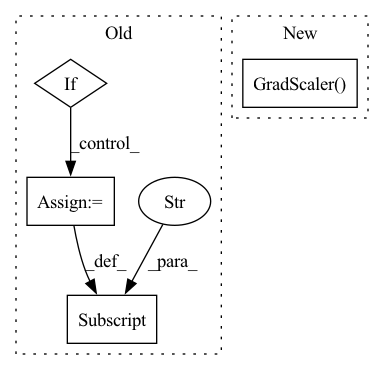

Pattern ID :33732

Before Change
"train_dataset": train_dataset.where(),
"eval_dataset": eval_dataset.where()}
if self.config.use_amp:
ckpt["amp"] = amp.state_dict()
torch.save(ckpt, self.config.save_checkpoint_path)
After Change
// Create an optimizer, learning rate scheduler and gradient scaler.
optimizer, scheduler = self.spec.create_optimizer(model.parameters())
recorder = Recorder()
scaler = amp.GradScaler()
// if self.config.use_amp:
// model, optimizer = amp.initialize(
// model, optimizer, opt_level="O2", verbosity=0)
In pattern: SUPERPATTERN
Frequency: 3
Non-data size: 4
Instances
Fragment ID: 96985427
Project Name: affjljoo3581/gpt2
Commit Name: 00ea99de92d8e8a849cf41c78317b074479d0569
Time: 2020-09-08
Author: affjljoo3581@gmail.com
File Name: src/gpt2/training/training.py
M Class Name: Trainer
N Class Name: Trainer
M Method Name: _train(4)
N Method Name: _train(4)
M Parent Class: object
N Parent Class: object
M File Name: src/gpt2/training/training.py
N File Name: src/gpt2/training/training.py
M Start Line: 50
M End Line: 136
N Start Line: 59
N End Line: 125
'>
Before Change
super().__init__(params)
self.amp = None
if "iter_size" not in self.params:
self.params["iter_size"] = 1
self.iter_size = self.params["iter_size"]
def train_step(self, batch, state) -> dict:
After Change
else int(self.params["iter_size"]))
self.amp = (False if "amp" not in self.params
else bool(self.params["amp"]))
self.scaler = torch.cuda.amp.GradScaler() if self.amp else None
def train_step(self, batch, state) -> dict:
self.train()
'>
Fragment ID: 96985426
Project Name: osai-ai/dokai
Commit Name: 7bf7f084cae8ce93321175dc52bd9f5acbdf770b
Time: 2021-03-23
Author: ruslan1123@gmail.com
File Name: example/cifar_advanced.py
M Class Name: CifarModel
N Class Name: CifarModel
M Method Name: __init__(2)
N Method Name: __init__(2)
M Parent Class: argus.Model
N Parent Class: argus.Model
M File Name: example/cifar_advanced.py
N File Name: example/cifar_advanced.py
M Start Line: 133
M End Line: 137
N Start Line: 119
N End Line: 123
'>
Before Change
super().__init__(params)
self.amp = None
if "iter_size" not in self.params:
self.params["iter_size"] = 1
self.iter_size = self.params["iter_size"]
def train_step(self, batch, state) -> dict:
After Change
else int(self.params["iter_size"]))
self.amp = (False if "amp" not in self.params
else bool(self.params["amp"]))
self.scaler = torch.cuda.amp.GradScaler() if self.amp else None
def train_step(self, batch, state) -> dict:
self.train()
'>
Fragment ID: 96985425
Project Name: osai-ai/dokai
Commit Name: 3e459cfa713e470562e7eaa03aef0d828d1bd203
Time: 2021-03-23
Author: ruslan1123@gmail.com
File Name: example/cifar_advanced.py
M Class Name: CifarModel
N Class Name: CifarModel
M Method Name: __init__(2)
N Method Name: __init__(2)
M Parent Class: argus.Model
N Parent Class: argus.Model
M File Name: example/cifar_advanced.py
N File Name: example/cifar_advanced.py
M Start Line: 133
M End Line: 137
N Start Line: 119
N End Line: 123